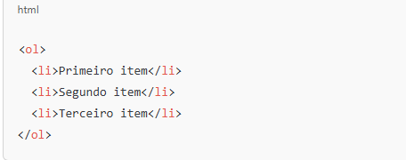

HTML (HyperText Markup Language) é a linguagem padrão usada para criar e estruturar páginas na web.
Ela serve para definir a estrutura de conteúdo em um site, como textos, imagens, links, tabelas, listas e outros elementos.
O quê é a teg OL?
Na programação, OL pode se referir a Ordered List (Lista Ordenada), especialmente quando falamos sobre HTML, onde:
é uma tag usada para criar uma lista ordenada. Isso significa que os itens da lista são apresentados em uma sequência específica (geralmente numerada ou com marcadores).

Para quê serve a tag UL?
é usada para criar uma lista não ordenada (ou seja, uma lista onde os itens não têm uma ordem específica).
Os itens dentro da lista são definidos usando a tag (list item).
Isso resulta em uma lista com marcadores:Item 1, Item 2, Item 3.
Para que serve a tag P?
A tag
em HTML é usada para definir um parágrafo de texto.
Exemplo básico:
Quando você a utiliza, o conteúdo dentro da tag é exibido com espaçamento e formatação apropriada para um parágrafo,
facilitando a leitura e organização do conteúdo na página.
Para que serve a tag input?
A tag é usada em HTML para criar campos de entrada interativos em formulários, permitindo que os usuários insiram dados.
A tag é essencial para a coleta de informações do usuário em formulários HTML.
Ela pode assumir diferentes tipos através do atributo type, como:
Para que serve a tag button?
A tag
Ela pode ser utilizada para enviar formulários, acionar scripts JavaScript ou simplesmente melhorar a interação do usuário.
O que é um programa?
Um programa é um conjunto de instruções escritas em uma linguagem de programação que um computador pode entender e executar.
Ele pode realizar diversas tarefas, desde operações simples,como somar dois números, até funções complexas,
como rodar um jogo ou um sistema bancário.
Programas de Sistema: Como sistemas operacionais (Windows,Linux,macOS).
Programas de Aplicação: Como navegadores de internet, editores de texto e jogos.
Programas Utilitários: Como antivírus e softwares de compressão de arquivos.
o que é software?
Software é um conjunto de programas, dados e instruções que fazem um computador funcionar e executar tarefas.
Diferente do hardware (as partes físicas do computador,Software é um conjunto de programas, dados e instruções que fazem um computador funcionar e executar tarefas. Diferente do hardware (as partes físicas do computador, como processador e memória),
como processador e memória),o software é a parte lógica e intangível do sistema.
Software de Sistema – Controla o funcionamento do hardware e outros programas.
Exemplo: Sistemas operacionais (Windows, Linux, macOS).
Software de Aplicação – Usado para realizar tarefas específicas para o usuário.
Exemplo: Navegadores (Chrome, Firefox), editores de texto (Word), jogos.